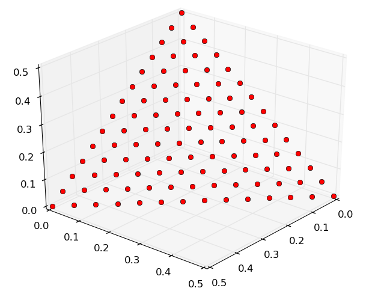

Decompose#
-
class decompose#
The decompose meta-problem.

This meta-problem decomposes a multi-objective input user-defined problem, resulting in a single-objective user-defined problem with a fitness function combining the original fitness functions. In particular, three different decomposition methods are here made available:
weighted decomposition,
Tchebycheff decomposition,
boundary interception method (with penalty constraint).
In the case of \(n\) objectives, we indicate with: \( \mathbf f(\mathbf x) = [f_1(\mathbf x), \ldots, f_n(\mathbf x)] \) the vector containing the original multiple objectives, with: \( \boldsymbol \lambda = (\lambda_1, \ldots, \lambda_n) \) an \(n\)-dimensional weight vector and with: \( \mathbf z^* = (z^*_1, \ldots, z^*_n) \) an \(n\)-dimensional reference point. We also ussume \(\lambda_i > 0, \forall i=1..n\) and \(\sum_i \lambda_i = 1\).
The decomposed problem is thus a single objective optimization problem having the following single objective, according to the decomposition method chosen:
weighted decomposition: \( f_d(\mathbf x) = \boldsymbol \lambda \cdot \mathbf f \),
Tchebycheff decomposition: \( f_d(\mathbf x) = \max_{1 \leq i \leq m} \lambda_i \vert f_i(\mathbf x) - z^*_i \vert \),
boundary interception method (with penalty constraint): \( f_d(\mathbf x) = d_1 + \theta d_2\),
where \(d_1 = (\mathbf f - \mathbf z^*) \cdot \hat {\mathbf i}_{\lambda}\), \(d_2 = \vert (\mathbf f - \mathbf z^*) - d_1 \hat {\mathbf i}_{\lambda})\vert\) and \( \hat {\mathbf i}_{\lambda} = \frac{\boldsymbol \lambda}{\vert \boldsymbol \lambda \vert}\).
See also
“Q. Zhang – MOEA/D: A Multiobjective Evolutionary Algorithm Based on Decomposition” https://en.wikipedia.org/wiki/Multi-objective_optimization#Scalarizing
Note
The reference point \(z^*\) is often taken as the ideal point and as such it may be allowed to change during the course of the optimization / evolution. The argument adapt_ideal activates this behaviour so that whenever a new ideal point is found \(z^*\) is adapted accordingly.
Note
The use of
pagmo::decomposediscards gradients and hessians so that if the original user defined problem implements them, they will not be available in the decomposed problem. The reason for this behaviour is that the Tchebycheff decomposition is not differentiable. Also, the use of this class was originally intended for derivative-free optimization.Public Functions
-
decompose()#
The default constructor will initialize
thiswith a 2-objectives pagmo::null_problem, weight vector[0.5, 0.5]and reference point[0., 0.].- Throws
unspecified – any exception thrown by the other constructor.
-
template<typename T, ctor_enabler<T> = 0>
inline explicit decompose(T &&p, const vector_double &weight, const vector_double &z, const std::string &method = "weighted", bool adapt_ideal = false)# Constructor from problem.
Wraps a user-defined problem (UDP) or a pagmo::problem so that its fitness will be decomposed using one of three decomposition methods. pagmo::decompose objects are user-defined problems that can be used to define a pagmo::problem.
Note
This constructor is enabled only if
Tcan be used to construct apagmo::problem.- Parameters
p – the input UDP or pagmo::problem.
weight – the vector of weights \(\boldsymbol \lambda\).
z – the reference point \(\mathbf z^*\).
method – an
std::stringcontaining the decomposition method chosen.adapt_ideal – when
true, the reference point is adapted at each fitness evaluation to be the ideal point.
- Throws
std::invalid_argument – if either:
pis single objective or constrained,methodis not one of["weighted", "tchebycheff", "bi"],weightis not of size \(n\),zis not of size \(n\),weightis not such that \(\lambda_i > 0, \forall i=1..n\),weightis not such that \(\sum_i \lambda_i = 1\).
-
vector_double fitness(const vector_double&) const#
Fitness computation.
The fitness values returned by the inner problem will be combined using the decomposition method selected during construction.
- Parameters
x – the decision vector.
- Throws
unspecified – any exception thrown by decompose::original_fitness(), or by the fitness decomposition.
- Returns
the decomposed fitness of
x.
-
vector_double original_fitness(const vector_double&) const#
Fitness of the original problem.
Returns the fitness of the original multi-objective problem used to construct the decomposed problem.
Note
This is not the fitness of the decomposed problem. Such a fitness is instead returned by calling
decompose::fitness().- Parameters
x – input decision vector.
- Throws
unspecified – any exception thrown by the original fitness computation.
- Returns
the fitness of the original multi-objective problem.
-
inline vector_double::size_type get_nobj() const#
Number of objectives.
- Returns
one.
-
vector_double::size_type get_nix() const#
Integer dimension.
- Returns
the integer dimension of the inner problem.
-
std::pair<vector_double, vector_double> get_bounds() const#
Box-bounds.
Forwards the bounds computations to the inner pagmo::problem.
- Throws
unspecified – any exception thrown by problem::get_bounds().
- Returns
the lower and upper bounds for each of the decision vector components.
-
vector_double get_z() const#
Gets the current reference point.
The reference point to be used for the decomposition. This is only used for Tchebycheff and boundary interception decomposition methods.
Note
The reference point is adapted (and thus may change) at each call of the fitness.
- Returns
the reference point.
-
std::string get_name() const#
Problem name.
This method will append
[decomposed]to the name of the inner problem.- Returns
a string containing the problem name.
-
std::string get_extra_info() const#
Extra information.
This method will add info about the decomposition method to the extra info provided by the inner problem.
- Returns
a string containing extra information on the problem.
-
bool has_set_seed() const#
Calls
has_set_seed()of the inner problem.Calls the method
has_set_seed()of the inner problem.- Returns
a flag signalling whether the inner problem is stochastic.
-
void set_seed(unsigned)#
Calls
set_seed()of the inner problem.Calls the method
set_seed()of the inner problem.- Parameters
seed – seed to be set.
- Throws
std::not_implemented_error – if the inner problem is not stochastic.
-
thread_safety get_thread_safety() const#
Problem’s thread safety level.
The thread safety of a meta-problem is defined by the thread safety of the inner pagmo::problem.
- Returns
the thread safety level of the inner pagmo::problem.
-
const problem &get_inner_problem() const#
Getter for the inner problem.
Returns a const reference to the inner pagmo::problem.
- Returns
a const reference to the inner pagmo::problem.
-
problem &get_inner_problem()#
Getter for the inner problem.
Returns a reference to the inner pagmo::problem.
Note
The ability to extract a non const reference is provided only in order to allow to call non-const methods on the internal
pagmo::probleminstance. Assigning a newpagmo::problemvia this reference is undefined behaviour.- Returns
a reference to the inner pagmo::problem.